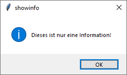
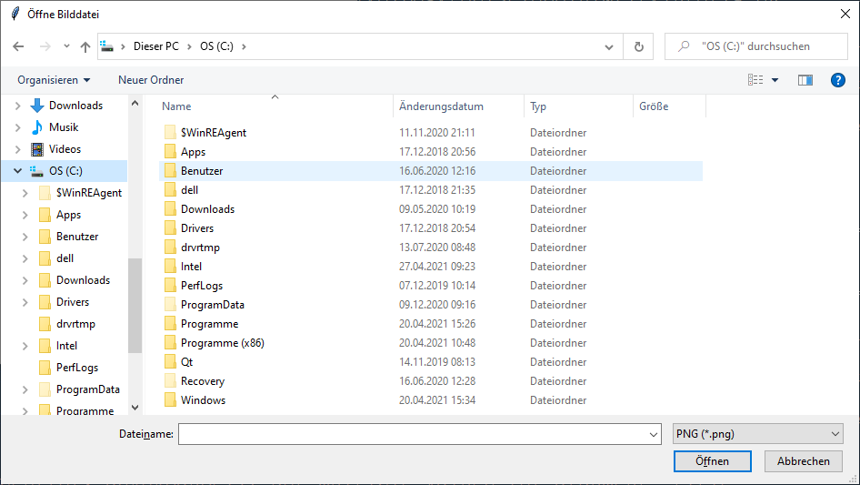
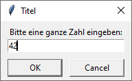
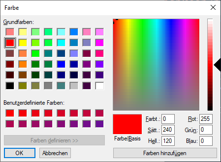

Nachrichtendialoge
Nachrichtendialoge erzeugen
ret = mb.dialogtyp(title, message, option)
Es können folgende Dialogtypen verwendet werden und sie haben jeweils die folgenden Rückgabewerte:
| Dialogtyp | Rückgabewert bei entsprechend gedrücktem Knopf |
|---|---|
| askokcancel | "OK": True, "Abbrechen": False |
| askquestion | "Ja": 'yes' "Nein": 'no' |
| askretrycancel | "Widerholen": True, "Abbrechen": False |
| askyesno | "Ja": True, "Nein": False |
| askyesnocancel | "Ja" : True, "Nein": False, "Abbrechen": None |
| showerror | "Ok": 'ok' |
| showinfo | "Ok": 'ok' |
| showwarning | "Ok": 'ok' |
Nachrichtendialoge kennen die Optionen:
| Option | Mögliche Werte | Bemerkung |
|---|---|---|
| default | mb.CANCEL, mb.IGNORE, mb.NO, mb,OK, mb.RETRY oder mb.YES | Aktivierter Knopf bei Dialogen |
| icon | mb.ERROR, mb.INFO, mb.QUESTION oder mb.WARNING | Dieses Bild wird angezeigt |
Das folgende Programm erzeugt der Reihe nach alle Dialoge aus der obige Auswahl und schreibt die jeweiligen Rückgabewerte auf die Konsole:
import tkinter as tk
from tkinter import ttk
from tkinter import messagebox as mb
class A(tk.Tk):
def __init__(self):
super().__init__()
self.geometry('400x400')
self._createWidgets()
self._runMessages()
def _createWidgets(self):
pass
def _runMessages(self):
ret = mb.askokcancel('askokcancel', 'Wollen Sie abbrechen?', default=mb.CANCEL)
print('askokcancel, Return Value:', ret)
ret = mb.askquestion('askquestion', 'Darf ich Ihnen eine Frage stellen?')
print('askquestion, Return Value:', ret)
ret = mb.askretrycancel('askretrycancel', 'Nochmal versuchen?')
print('askretrycancel, Return Value:', ret)
ret = mb.askyesno('askyesno', 'Ja oder Nein?')
print('askyesno, Return Value:', ret)
ret = mb.askyesnocancel('askyesnocancel', 'Ja-Nö-Vielleicht')
print('askyesnocancel, Return Value:', ret)
ret = mb.showerror('showerror', 'Oh, ein Fehler!')
print('showerror, Return Value:', ret)
ret = mb.showinfo('showinfo', 'Dieses ist nur eine Information!')
print('showinfo, Return Value:', ret)
ret = mb.showwarning('showwarning', 'Dieses ist eine Warnung!')
print('showwarning, Return Value:', ret)
if __name__ == '__main__':
window = A()
window.mainloop()Dateidialoge
Dateidialoge erzeugen
ret = fd.dialogtyp(optionen)
Es werden u.a. die folgenden Dateidialoge unterstützt:
| Dateidialogtyp | Beschreibung |
|---|---|
| fd.askdirectory(optionen) | Es wird nach einem existierenden Verzeichnis gefragt, der Verzeichnispfad wird zurückgeliefert |
| fd.askopenfilename(optionen) | Es wird nach einer Datei gefragt, der Dateiname wird zurückgeliefert |
| fd.askopenfilenames(optionen) | Es wird nach (mehreren) Dateien gefragt.
Gibt eine Liste von Dateinamen zurück. Gleicher Effekt, wie mit
fd.askopenfilename(…) und gesetzter Option multiple |
| fd.asksaveasfilename(optionen) | Standarddialog zum Speichern einer Datei. Es wird beim Versuch, eine Datei zu überschreiben, nachgefragt. |
Dateidialoge kennen die folgenden Optionen:
| Option | Bemerkung |
|---|---|
| defaultextension | (nur fd.asksaveasfilename(…))
Dateinamenserweiterung wie .txt, die an Dateien ohne Erweiterung angehängt
wird. Kein Effekt bei Dateien, die selber einen Punkt "." beinhalten |
| filetypes | Liste von Dateitypen der Form: [(TYPNAME, MUSTER), …],
auch mit Wildcard. Schränkt Suchergebnisse ein. |
| initialdir | Anfangsverzeichnis |
| initialfile | Anfangsdateiname |
| multiple | 'true': mehrere Items können gleichzeitig ausgewählt werden,
(nur fd.askopenfilename(…) |
| parent | Parent-Fenster, über dem der Dialog dargestellt wird |
| title | Titel |
Das folgende Programm erzeugt der Reihe nach die Dialoge aus der obige Auswahl und schreibt die jeweiligen Rückgabewerte auf die Konsole:
import tkinter as tk
from tkinter import ttk
from tkinter import filedialog as fd
class A(tk.Tk):
def __init__(self):
super().__init__()
self.geometry('400x400')
self._createWidgets()
self._runFiledialoges()
def _createWidgets(self):
pass
def _runFiledialoges(self):
dirname = fd.askdirectory(title='Such dir ein Verzeichnis aus')
print('askdirectory:', dirname)
filename = fd.askopenfilename(title='Öffne Bilddatei',
filetypes=[('PNG', '*.png'),('JPG', '*.jpg')],
multiple='true' )
print('askopenfilename:', filename)
filenames = fd.askopenfilenames(title='Viele Dateien zum Öffnen')
print('askopenfilenames:', filenames)
filename = fd.asksaveasfilename(title='Speichere eine Datei' )
print('asksaveasfilename:', filename)
if __name__ == '__main__':
window = A()
window.mainloop()Eingabedialoge
Eingabedialoge erzeugen
ret = sd.dialogtyp(ttiel, prompt, optionen)
Es werden u.a. die folgenden Eingabedialoge unterstützt:
| Eingabedialogetyp | Beschreibung |
|---|---|
| sd.askfloat (optionen) | Fragt nach einer Fließkommazahl |
| sd.askinteger (optionen) | Fragt nach einer ganzen Zahl |
| sd.askstring (optionen) | Fragt nach einem String |
Eingabedialoge kennen die folgenden Optionen:
| Option | Bemerkung |
|---|---|
| initialvalue | Angabe eines Wertes, der voreingestellt angezeigt wird |
| minvalue | Kleinster erlaubter Wert (für Zahlendialoge) |
| maxvalue | Größter erlaubter Wert (für Zahlendialoge) |
| parent | Fenster, über dem der Dialog dargestellt werden soll. Diese Angabe sollte man machen, da sonst der Dialog oft hinter anderen Fenstern liegt. |
Das folgende Programm erzeugt der Reihe nach die Dialoge aus der obige Auswahl und schreibt die jeweiligen Rückgabewerte auf die Konsole:
import tkinter as tk
from tkinter import ttk
from tkinter import simpledialog as sd
class A(tk.Tk):
def __init__(self):
super().__init__()
self.geometry('400x400')
self._createWidgets()
self._runSimpleDialoges()
def _createWidgets(self):
pass
def _runSimpleDialoges(self):
a = sd.askfloat('Titel', 'Bitte eine Fließkommazahl eingeben:',
parent=self)
b = sd.askinteger('Titel', 'Bitte eine ganze Zahl eingeben:',
parent=self)
c = sd.askstring('Titel', 'Bitte etwas Text eingeben:',
parent=self)
print(a, b, c)
a = sd.askinteger('Titel',
'Test von Optionen', initialvalue=42,
minvalue=10, maxvalue=50, parent=self)
print(a)
if __name__ == '__main__':
window = A()
window.mainloop()Farbdialog
Farbdialog erzeugen
ret = c.askcolor(color=None, optionen)
Der Farbdialog kennt die folgenden Optionen:
| Option | Bemerkung |
|---|---|
| initialcolor | Zeigt diese Farbe im Dialog an. Der Funktionsparameter
color hat Vorrang vor dieser Option |
| title | Angabe eines Wertes, der voreingestellt angezeigt wird |
| parent | Fenster, über dem der Dialog dargestellt werden soll. Diese Angabe sollte man machen, da sonst der Dialog oft hinter anderen Fenstern liegt. |
Rückgabewert: Wird der Dialog über Cancel beendet ist der Rückgabewert
(None, None), sonst ein Farbcode wie ((0, 128, 0), '#008000').
Das folgende Programm erzeugt einen Farbdialog und schreibt den Rückgabewerte auf die Konsole:
import tkinter as tk
from tkinter import ttk
from tkinter import colorchooser as c
class A(tk.Tk):
def __init__(self):
super().__init__()
self.geometry('400x400')
self._createWidgets()
self._runAskColor()
def _createWidgets(self):
pass
def _runAskColor(self):
ret = c.askcolor(color='red', parent=self)
print(ret)
if __name__ == '__main__':
window = A()
window.mainloop()